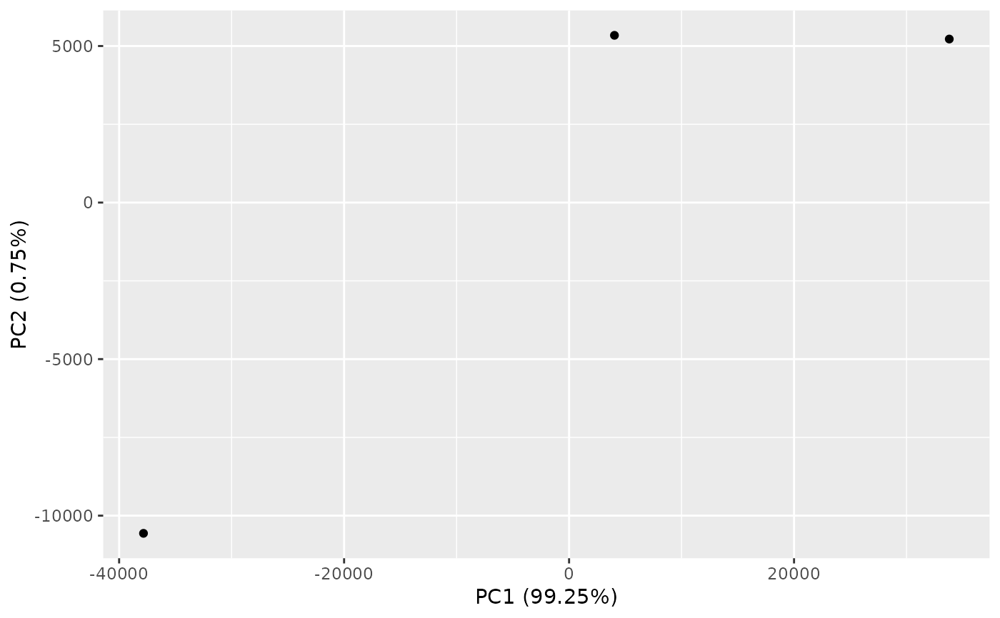
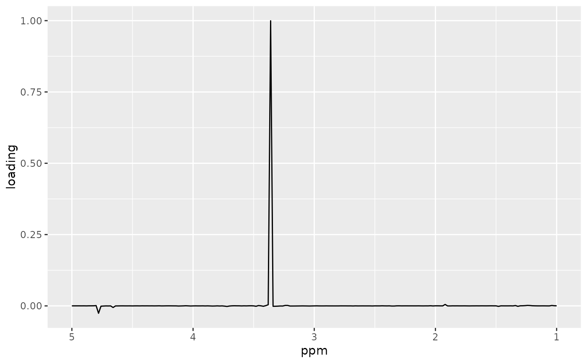

nmr_pca_plots.RdPlotting functions for PCA
nmr_pca_plot_variance(pca_model) nmr_pca_scoreplot(nmr_dataset, pca_model, comp = seq_len(2), ...) nmr_pca_loadingplot(pca_model, comp)
| pca_model | A PCA model trained with nmr_pca_build_model |
|---|---|
| nmr_dataset | an nmr_dataset_1D object |
| comp | Components to represent |
| ... | Additional aesthetics passed on to ggplot2::aes (use bare unquoted names) |
Plot of PCA
Other PCA related functions:
nmr_pca_build_model(),
nmr_pca_outliers_filter(),
nmr_pca_outliers_plot(),
nmr_pca_outliers_robust(),
nmr_pca_outliers()
dir_to_demo_dataset <- system.file("dataset-demo", package = "AlpsNMR") dataset <- nmr_read_samples_dir(dir_to_demo_dataset) dataset_1D <- nmr_interpolate_1D(dataset, axis = c(min = -0.5, max = 10, by = 2.3E-4)) model <- nmr_pca_build_model(dataset_1D) nmr_pca_plot_variance(model)dir_to_demo_dataset <- system.file("dataset-demo", package = "AlpsNMR") dataset <- nmr_read_samples_dir(dir_to_demo_dataset) dataset_1D <- nmr_interpolate_1D(dataset, axis = c(min = -0.5, max = 10, by = 2.3E-4)) model <- nmr_pca_build_model(dataset_1D) nmr_pca_scoreplot(dataset_1D, model)dir_to_demo_dataset <- system.file("dataset-demo", package = "AlpsNMR") dataset <- nmr_read_samples_dir(dir_to_demo_dataset) dataset_1D <- nmr_interpolate_1D(dataset, axis = c(min = -0.5, max = 10, by = 2.3E-4)) model <- nmr_pca_build_model(dataset_1D) nmr_pca_loadingplot(model, 1)